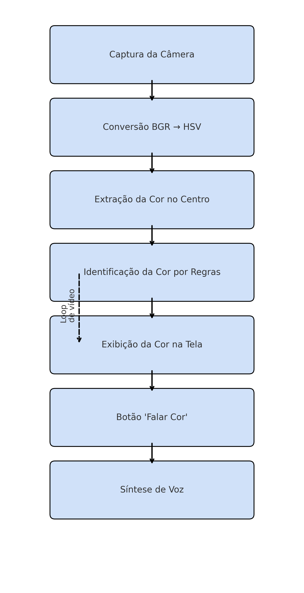

Etapa 2: Modelagem Funcional do Sistema (MF)
Lucas Sanchez Bitencourt
RA 11201921617
Marcela Ceschim Caburlão
RA 11201920483
Michael Franklin Saito
RA 11201810988
Data do documento:
25/06/2025
Projeto:
Sistema de Reconhecimento de Cores com Feedback Sonoro em Tempo Real
2 Modelagem Funcional do Sistema
Cenário Funcional e Conceito do Sistema
O sistema proposto realiza o reconhecimento de cores visuais capturadas por uma webcam,
exibindo o nome da cor detectada na tela e oferecendo feedback por voz sintetizada.
O sistema tem como foco a acessibilidade para pessoas com deficiência visual,
permitindo que objetos coloridos sejam identificados por meio de um retorno auditivo simples.
A concepção do sistema está estruturada de forma modular, permitindo fácil expansão de funcionalidades,
como detecção de múltiplas cores, registro de histórico, ou integração com dispositivos móveis.
A interface gráfica foi desenvolvida com botões e saída de vídeo em tempo real, permitindo interatividade mesmo para usuários leigos.
Componentes Funcionais e Fluxo
📥 1. Captura de Imagem
- Entrada: Sinal de vídeo da webcam (quadro por quadro)
- Processamento: Captura do frame atual da câmera
- Saída: Imagem colorida do tipo BGR (OpenCV)
📊 2. Pré-processamento e Análise da Cor
- Entrada: Imagem BGR do frame
- Processamento:
- Conversão de cor de BGR para HSV
- Seleção de região central (ROI)
- Extração dos valores de matiz (Hue), saturação (S) e brilho (V)
- Mapeamento do valor de H para o nome da cor com base em limiares
- Saída: String com o nome da cor (ex: "azul", "vermelho")
🖥️ 3. Interface Gráfica
- Entrada: Imagem com informações da cor detectada
- Processamento:
- Desenho de círculo no centro
- Exibição do nome da cor
- Apresentação da imagem em uma janela GUI
- Saída: Exibição em tempo real da câmera com sobreposição gráfica
🔊 4. Síntese de Voz
- Entrada: Nome da cor como string
- Processamento: Geração de voz sintetizada (pyttsx3)
- Saída: Áudio pronunciando “Cor [nome da cor (ex: 'Cor azul')]”
Fluxograma
